Dialog Boxes
BACnet Object Browser contains many dialog boxes that help you use the tool. Within each topic in this section, you will find the dialog box purpose and location in the software. Review the following topics as needed:
Add/Remove List Element
Where You Can Find the Dialog Box
From the system tree, select your BACnet device, and then from the Services menu, select Add/Remove List Element.
What You Can Do with the Dialog Box
The Add/Remove List Element dialog box allows you to add list elements to an object in a device or remove list elements from an object in a device. The BACnet Object Browser only allows editing of simple data type lists.
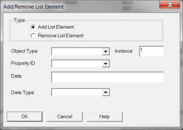
Field/Button | Description |
Add List Element | Check this button to add a list element to an object. |
Remove List Element | Check this button to remove a list element from an object. |
Object Type | Click the drop-down arrow to select an object type. |
Instance | Enter the instance number of the object. |
Property ID | Click the drop-down arrow to select a property ID type. |
Data | Enter enumerated values separated by commas. |
Data Type | Click the drop-down arrow to select the Enumerated, Real, Signed, or Unsigned data type. |
OK | Saves the information and exits the dialog box. |
Cancel | Cancels the function and exits the dialog box. |
BBMD Configuration
Where You Can Find the Dialog Box
From the system tree, select your BACnet device, and then from the Services menu, select BBMD Configuration.
What You Can Do with the Dialog Box
The BBMD Configuration dialog box allows you to send the Broadcast Distribution Table to one or more devices.
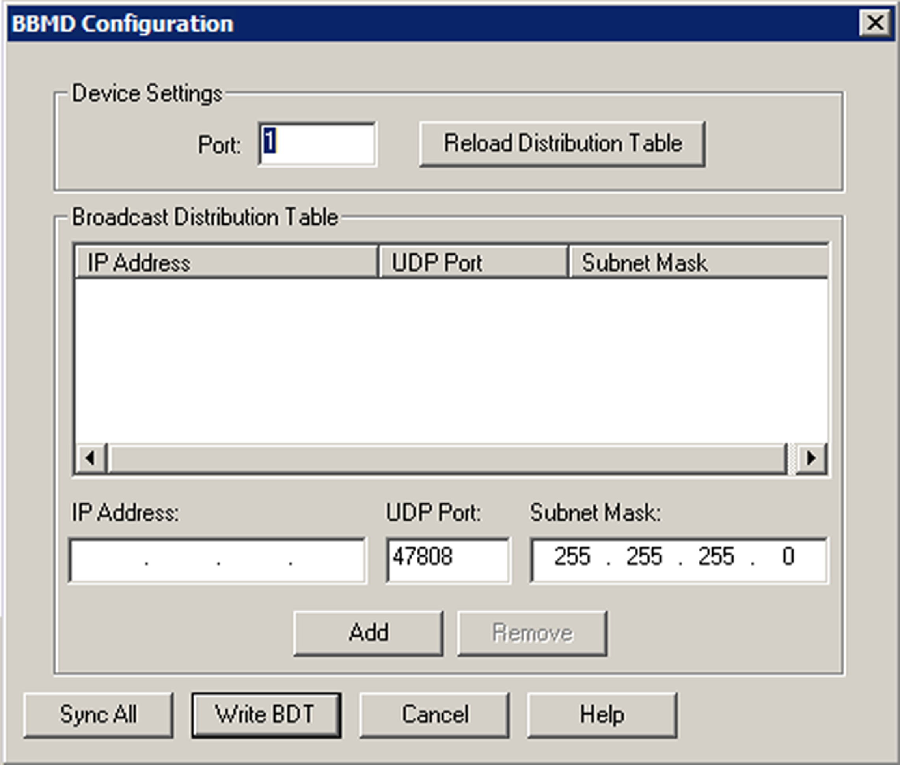
Field/Button | Description |
Port | Enter the BACstac port number for the device. Normally, the number is 1. |
Reload Distribution Table | Click this button to reload the Broadcast Distribution Table. |
IP Address | Enter the IP Address for a device on the network that you want to add to the BBMD table. Adding an entry with the same IP address will overwrite any existing address with that IP Address. Double-clicking on an item in the list will populate the IP Address, UDP Port, and Subnet Mask so that entry can be edited. |
UDP | Accept the default UDP number, 47808. |
Subnet Mask | The Subnet Mask should match the mask setup for your network segment. You can use ipconfig / all at the command prompt to retrieve this information. The Subnet Mask is usually 255.255.255.0. |
Sync All | Click this to synchronize the table with each device in the table. |
Write BDT | Click this to send the IP address and broadcast distribution method of this BBMD to all of its peers on the network. |
OK | Click this to synchronize the table with the local device and exit the dialog box. |
Cancel | Cancels the function and exits the dialog box. |
Channel Present Value
Where You Can Find the Dialog Box
From the system tree, select your BACnet device. From the Channel Objects folder, select an object. In the Property Name column, double-click present-value.
What You Can Do with the Dialog Box
The Channel Present Value dialog box allows you to change the data type, priority, and value.
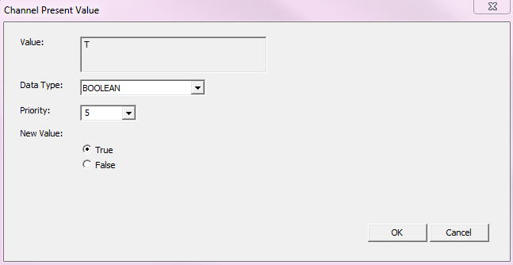
Field/Button | Description |
Value | Displays the value. |
Data Type | Allows you to select the data type. |
Priority | Allows you to enter one of the 16 BACnet priorities. |
New Value | Allows you to change the present value. |
OK | Confirms your modifications and exits the dialog box. |
Cancel | Cancels your modifications and exits the dialog box. |
Configure Event Parameters
Where You Can Find the Dialog Box
From the system tree, expand your BACnet device. Select an Event Enrollments object, and then in the Property Name column, double-click event-parameters.
What You Can Do with the Dialog Box
The Configure Event Parameters dialog box allows you to edit event parameters for several event types. The dialog box contains nine tabs to represent the nine event types.
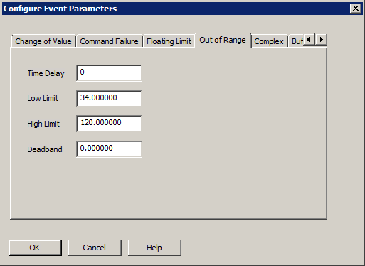
Field/Button | Description |
Change of Bit String |
|
Change of State |
|
Change of Value |
|
Command Failure |
|
Floating Limit |
|
Out of Range |
|
Change of Life Safety |
|
Buffer Ready2 |
|
Unsigned Range |
|
OK | Confirms the modifications and exits the dialog box. |
Cancel | Cancels the function and exits the dialog box. |
Confirmed Private Transfer
Where You Can Find the Dialog Box
From the system tree, select your BACnet device, and then from the Services menu, select Private Transfer.
What You Can Do with the Dialog Box
The Confirmed Private Transfer dialog box provides a way to send messages from one BACnet device to another.
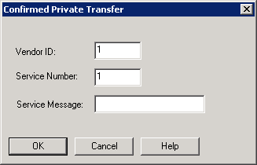
Field/Button | Description |
Vendor ID | Allows you to enter the Vendor ID belonging to this device. |
Service Number | Allows you to enter the Service Number of this request. |
Service Message | Allows you to enter a message to send to another BACnet device. |
OK | Saves the information and exits the dialog box. |
Cancel | Cancels the function and exits the dialog box. |
Create Object
Where You Can Find the Dialog Box
From the system tree, select your BACnet device, and then from the Services menu, select Create Object.
What You Can Do with the Dialog Box
The Create Object dialog box allows you to create a new object in a device.
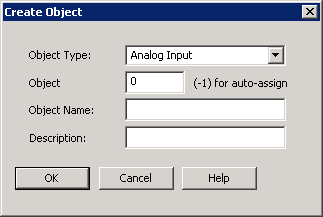
Field/Button | Description |
Object Type | Click the drop-down arrow to select the new object type you want to create. |
Object | Enter the Object Instance number you want to assign to this object. Entering -1 activates the auto-assign function. |
Object Name | Enter the name you want to assign to this object. |
Description | Enter a text description of the object you are creating. |
OK | Saves the information and exits the dialog box. |
Cancel | Cancels the function and exits the dialog box. |
Device Communication Control
Where You Can Find the Dialog Box
From the system tree, select your BACnet device, and then from the Services menu, select Device Communication Control.
What You Can Do with the Dialog Box
The Device Communication Control dialog box allows you to send a Device Communication Control command to the selected device.
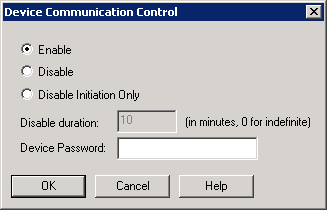
Field/Button | Description |
Enable | Check this button to enable communication for the selected device. |
Disable | Check this button to disable communication for the selected device. |
Disable Initiation Only | Check this button to disable the selected device’s ability to initiate communication. |
Disable Duration | Enter the times in minutes that you want the selected device to be disabled. Enter 0 for an indefinite amount of time. |
Device Password | Enter the device password here. |
OK | Saves the information and exits the dialog box. |
Cancel | Cancels the function and exits the dialog box. |
Display Security Key Set
Where You Can Find the Dialog Box
From the system tree, expand your BACnet device. From the Network Security Objects folder, select an object. In the Property Name column, double-click key-sets.
What You Can Do with the Dialog Box
The Display Security Key Set dialog box allows you to view the contents of the devices 2 key sets. The dialog box displays read-only properties of the key sets.
If a key set has not been provided, the Key Revision field is set to “0”, the Key Identifiers are blank, and the Activation Time and Expiration Time fields display wildcard values.
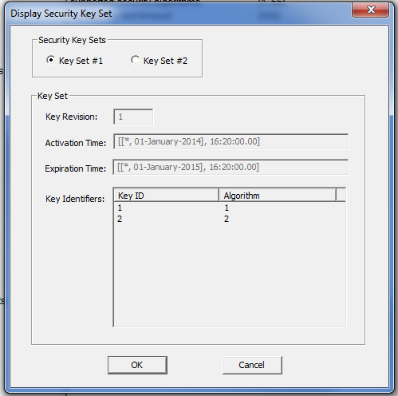
Field/Button | Description |
Security Key Sets | Check one of these buttons to view details of the key set. |
Key Revision | Displays the number of the security key set selected. |
Activation Time | Displays the UTC time the key set is valid. |
Expiration Time | Displays the UTC time the key set is no longer valid. |
Key Identifiers | Displays the key to be used and the signature and encryption algorithm the key is used with. |
OK | Saves the information and exits the dialog box. |
Cancel | Cancels the function and exits the dialog box. |
Edit Access Rules
Where You Can Find the Dialog Box
From the system tree, expand your BACnet device. From the Access Rights folder, select an object. In the Property Name column, double-click either negative-access-rules or positive-access-rules.
What You Can Do with the Dialog Box
The Edit Access Rules dialog box allows you to edit access rules for the selected object.
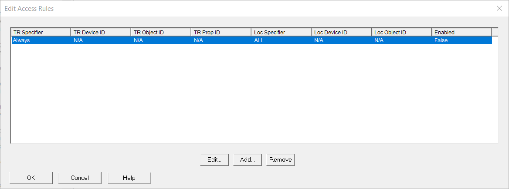
Field/Button | Description |
Edit | Allows you to modify parameters for the selected property. |
Add | Allows you to add a new item and parameters. |
Remove | Removes the selected entry. |
Edit Action Element
Where You Can Find the Dialog Box
From the system tree, expand your BACnet device. From the Commands folder, select an object. In the Property Name column, right-click action and select Write Property. From the Edit Actions dialog box, click the Edit button.
What You Can Do with the Dialog Box
The Edit Action Element dialog box allows you to add, modify, or delete an action element from an Action list.
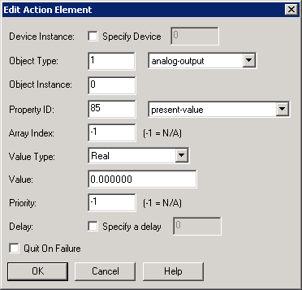
Field/Button | Description |
Device Instance | Allows you to modify the device instance number. |
Object Type | Allows you to modify the number that defines the object type or click the drop-down arrow to select the type of value for the object. |
Object Instance | Allows you to modify the number that defines the object instance. |
Property ID | Allows you to modify the number that defines the property or click the drop-down arrow to select the type of value for the property. |
Array Index | Allows you to modify a number other than the default. |
Value Type | Allows you to modify the type of value. |
Value | Allows you to modify the value of the object or point for the action text entry command. |
Priority | Allows you to modify the priority of the command for the action text entry if it has a priority array. The default setting is -1, which implies it is not applicable. |
Delay | Allows you to modify the amount of time to delay the command for the action text entry. |
Quit on Failure | When checked, quits commanding if any commands fail. |
OK | Confirms your modifications and exits the dialog box. |
Edit Actions
Where You Can Find the Dialog Box
From the system tree, expand your BACnet device. From the Commands folder, select an object. In the Property Name column, right-click action, and then select Write Property.
What You Can Do with the Dialog Box
The Edit Actions dialog box contains two separate sections. The top section lists the Index Number, Action Text, and Number of Commands associated with the action list along with Add and Remove buttons specific to the section.
The bottom section details the action text command you have highlighted or selected in the top section. It lists the following information: Device Instance, Object ID, Property ID, Array Index, Value, Priority, Delay, Out on Fail, and Write Success along with Edit, Add, and Remove buttons specific to the section. You can edit, add, or remove any number of commands for each action text you have configured.
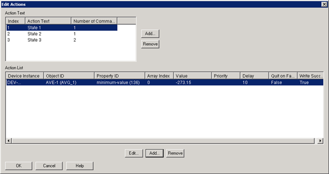
Field/Button | Description |
Action Text |
|
Action List |
|
Edit Address Binding
Where You Can Find the Dialog Box
From the system tree, expand your BACnet device. From the Network Security Objects folder, select an object. In the Property Name column, double-click last-key-server.
What You Can Do with the Dialog Box
The Edit Address Binding dialog box allows you to specify the object ID and address of the Key Server that will update a security key in the device.
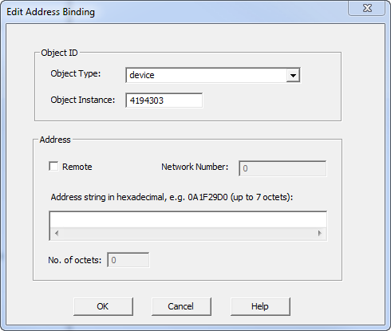
Field/Button | Description |
Object Type | Click the drop-down arrow to select an object type. |
Object Instance | Displays the object instance number. |
Remote | Click this check box if the object resides on a different network. |
Network Number | When Remote is enabled, displays the network number. |
Address string in hexadecimal | Enter a hexadecimal address string for the remote network. |
No. of octets | Displays the number of octets in the address string. |
OK | Saves the information and exits the dialog box. |
Cancel | Cancels the function and exits the dialog box. |
Edit Assigned Access Rights List
Where You Can Find the Dialog Box
From the system tree, expand your BACnet device. From the Access Credentials folder, select an object. In the Property Name column, double-click assigned-access-rights. Then, double-click an entry.
What You Can Do with the Dialog Box
The Edit Assigned Access Rights List dialog box allows you to add or modify assigned rights for the object and device.
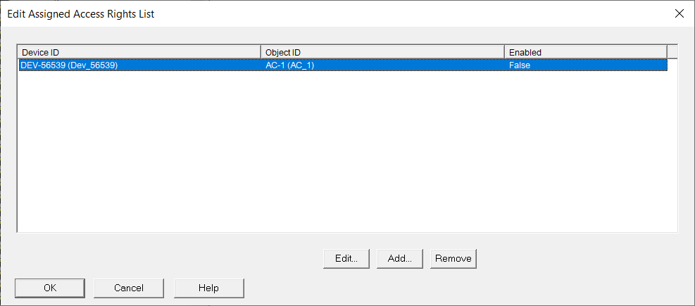
Field/Button | Description |
Edit | Allows you to modify assigned rights for the object and device. |
Add | Allows you to add an entry and assign rights for the object and device. |
Remove | Removes the selection. |
Edit Assigned Landing Call List
Where You Can Find the Dialog Box
From the system tree, expand your BACnet device. From the Lifts folder, select an object. In the Property Name column, double-click the assigned-landing-calls.
What You Can Do with the Dialog Box
The Edit Assigned Landing Call List dialog box allows you to see a list of available floors where the elevator can stop.
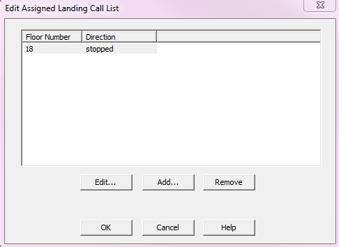
Field/Button | Description |
Edit | Allows you to edit the selected landing call. |
Add | Allows you to add a landing call. |
Remove | Allows you to remove a landing call. |
OK | Confirms your modifications and exits the dialog box. |
Cancel | Cancels your modifications and exits the dialog box. |
Edit Assigned Landing Call
Where You Can Find the Dialog Box
From the Edit Assigned Landing Call List dialog box, click the list and select Edit.
What You Can Do with the Dialog Box
The Edit Assigned Landing Call dialog box allows you to edit the assigned landing call.
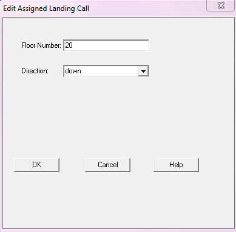
Field/Button | Description |
Floor Number | The requested floor. |
Direction | The direction the lift travels. |
OK | Confirms your modifications and exits the dialog box. |
Cancel | Cancels your modifications and exits the dialog box. |
Add Assigned Landing Call
Where You Can Find the Dialog Box
From the Edit Assigned Landing Call List dialog box, select an object from the list and click Add.
What You Can Do with the Dialog Box
The Edit Assigned Landing Call dialog box allows you to add a landing call.
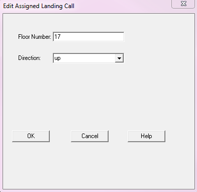
Field/Button | Description |
Floor Number | The requested floor. |
Direction | The direction the lift travels. |
OK | Confirms your modifications and exits the dialog box. |
Cancel | Cancels your modifications and exits the dialog box. |
Edit Authentication Policy
Where You Can Find the Dialog Box
From the system tree, expand your BACnet device. From the Access Point folder, select an object.
In the Property Name column, double-click authentication-policy-list. Double-click an entry, and then double-click a device in the Device ID column.
What You Can Do with the Dialog Box
The Edit Authentication Policy dialog box allows you to add and modify the authentication policy for devices. The dialog also allows you to add devices to the Credential Input List.
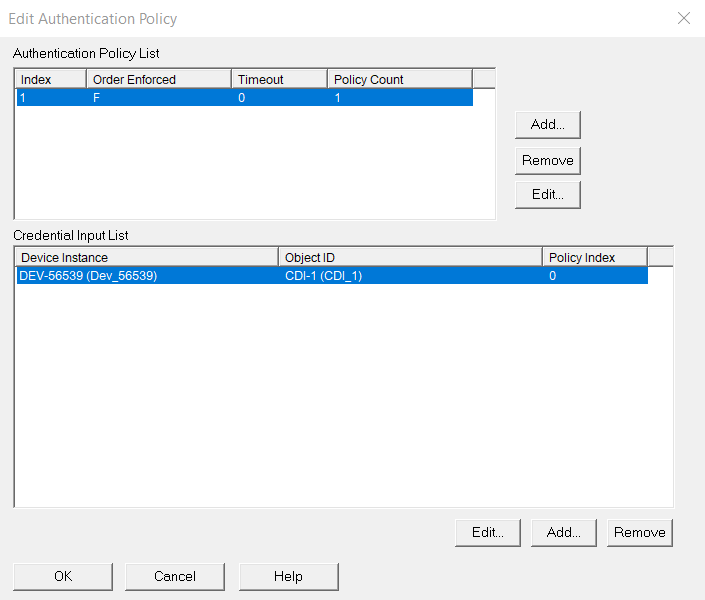
Field/Button | Description |
Authentication Policy List |
|
Credential Input List |
|
Edit Bit String
Where You Can Find the Dialog Box
From the system tree, expand your BACnet device. From the Bitstring Values folder, select an object. In the Property Name column, double-click bit-mask.
What You Can Do with the Dialog Box
The Edit Bit String dialog box allows you to edit the Bit String.
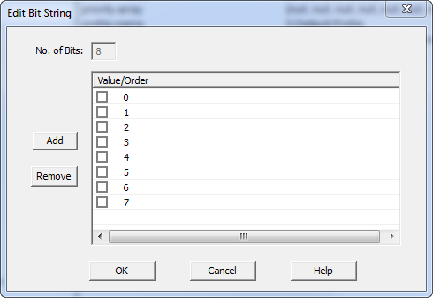
Field/Button | Description |
No. of Bits | Not editable. Displays the number of bits in the string. |
Add | Allows you add a bit. |
Remove | Allows you to remove a bit. |
OK | Saves the information and exits the dialog box. |
Cancel | Cancels the modifications and exits the dialog box. |
Edit Bit String List
Where You Can Find the Dialog Box
From the system tree, expand your BACnet device. From the Bitstring Values folder, select an object. In the Property Name column, double-click alarm-values.
What You Can Do with the Dialog Box
The Edit Bit String List dialog box allows you to add, modify, or remove bits from the Bit String list.
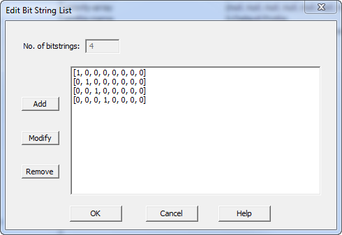
Field/Button | Description |
No. of bitstrings | Non-editable. Displays the number of bit strings. |
Add | Allows you to add a bitstring to the list. |
Modify | Allows you to modify an existing bit string. |
Remove | Allows you to remove a bitstring from the list. |
OK | Saves the information and exits the dialog box. |
Cancel | Cancels the function and exits the dialog box. |
Edit Calendar Entry
Where You Can Find the Dialog Box
From the system tree, expand your BACnet device. From the Calendars folder, select an object. In the Property Name column, double-click date-list, and then double-click Single Date. From the EditDate List dialog box, click Add.
What You Can Do with the Dialog Box
The Edit Calendar Entry dialog box allows you to add or modify calendar entries.
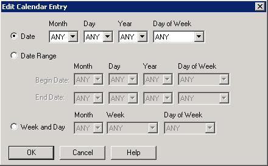
Field/Button | Description |
Date | Allows you to modify the calendar date entry by a specific date. |
Date Range | Allows you to modify the calendar date entry by begin and end dates. |
Week and Day | Allows you to modify the calendar date entry by specific week and day. |
OK | Confirms your modifications and exits the dialog box. |
Edit Character String List
Where You Can Find the Dialog Box
From the system tree, expand your BACnet device. From the Charstring Values folder, select an object. In the Property Name column, right-click alarm-values, and select Write Property.
What You Can Do with the Dialog Box
The Edit Character String List dialog box allows you to edit the Character String list.
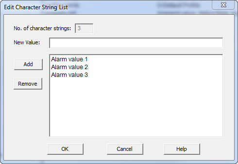
Field/Button | Description |
No. of character strings | Non-editable. Displays the number of associated character strings. |
New Value | Enter a new character string value. |
Add | Allows you to add the character string entered in the New Value field. |
Remove | Allows you to remove a selected character string. |
OK | Saves the information and exits the dialog box. |
| Cancels the function and exits the dialog box. |
Edit Credential Authentication Factor List
Where You Can Find the Dialog Box
From the system tree, expand your BACnet device. From the Access Credential folder, select an object. In the Property Name column, double-click authentication-factors. Then, double-click the entry.
What You Can Do with the Dialog Box
The Edit Credential Authentication Factor List dialog box allows you to set parameters for credential authentication.
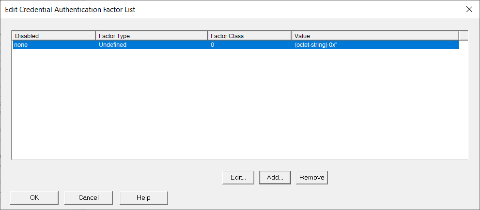
Field/Button | Description |
Edit | Allows you to modify authentication credentials for the selected item. |
Add | Allows you to add new authentication credentials. |
Remove | Allows you to remove the selected entry from the list. |
Edit Date List
Where You Can Find the Dialog Box
From the system tree, expand your BACnet device. From the Calendars folder, select an object. In the Property Name column, double-click date-list, and then double-click Single Date.
What You Can Do with the Dialog Box
The Edit Date List dialog box allows you to add, modify, and delete entries from the Calendar list. All the entries are listed according to entry type and date.
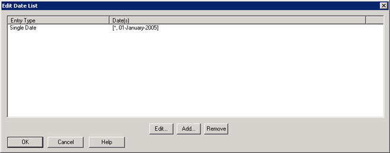
Field/Button | Description |
Edit | Allows you to edit date list information of the Calendar object type. |
Add | Allows you to add date list information of the Calendar object type. |
Remove | Allows you to remove a date list entry of the Calendar object type. |
OK | Confirms your modifications and exits the dialog box. |
Edit Destination
Where You Can Find the Dialog Box
From the system tree, expand your BACnet device. From the Notification Classes folder, select an object. In the Property Name column, right-click recipient-list and select Write Property. From the Edit Recipient List dialog box, click Add.
What You Can Do with the Dialog Box
The Edit Destination dialog box allows you to edit an existing BACnet destination or add a new BACnet destination in the Recipient_List property of a Notification Class object.
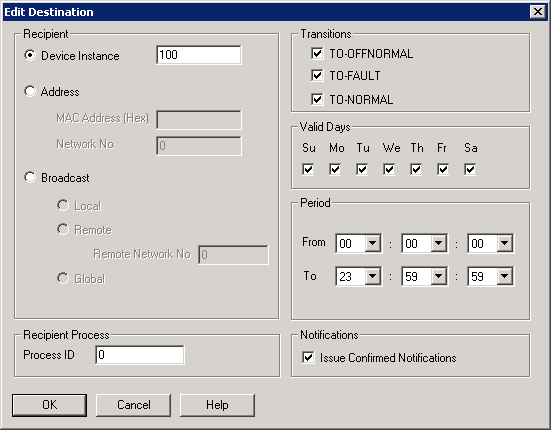
Field/Button | Description |
Recipient |
|
Recipient Process |
|
Transitions |
|
Valid Days | Allows you to check one or more days of the week on which events are sent to a recipient, as desired. |
Period | Allows you to specify the times on each day when events are to be sent to a recipient in the From and To fields by clicking the drop-down arrows, if desired. These time fields are in a 24-hour or military time format, for example, seven o'clock in the evening is represented as 19:00.
|
Notifications | Allows you to specify whether to send confirmed event notifications to this recipient. If unchecked, unconfirmed event notifications are sent. |
Edit Device Object Reference
Where You Can Find the Dialog Box
From the system tree, expand your BACnet device. From the Escalators folder, select an object. In the Property Name column, double-click energy-meter-ref.
What You Can Do with the Dialog Box
The Edit Device Object Reference dialog box allows you to change the instance number of the object.
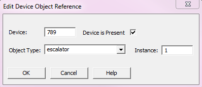
Field/Button | Description |
Device | The name of the BACnet device. |
Device is Present | Allows you to select whether a device is present. |
Object Type | Displays a list of available object types. |
Instance | Displays the Instance number |
OK | Confirms your modifications and exits the dialog box. |
Cancel | Cancels your modifications and exits the dialog box. |
Edit Device Object Reference List
Where You Can Find the Dialog Box
From the system tree, expand your BACnet device. From the Schedules folder, select an object. In the Property Name column, right-click list-of-object-property-references, and select Write Property.
What You Can Do with the Dialog Box
The Edit Device Object Reference List dialog box allows you to view, edit, add, and remove object reference information.
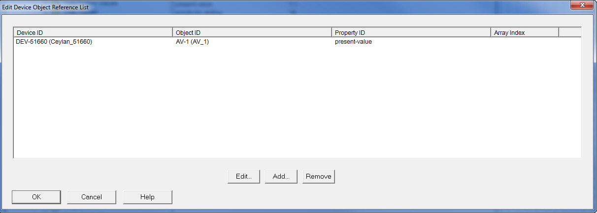
Field/Button | Description |
Device ID | Displays the Device ID information. |
Object ID | Displays the associated Object ID. |
Property ID | Displays the associated Property ID. |
Array Index | Displays the associated Array Index. |
Edit | Displays the Edit Object Property Reference dialog box that displays the current values of the object properties and allows you to edit the object property references. |
Add | Displays the Edit Object Property Reference dialog box and allows you to add new object property references. |
Remove | Removes the current object property reference. |
OK | Saves the information and exits the dialog box. |
Cancel | Cancels the function and exits the dialog box. |
Edit Exception Schedule
Where You Can Find the Dialog Box
From the system tree, expand your BACnet device. From the Schedules folder, select an object. In the Property Name column, right-click exception-schedule, and select Write Property.
What You Can Do with the Dialog Box
The Edit Exception Schedule dialog box allows you to add, modify, or remove Exception Schedule Events and to also add, modify, or remove entries in the command list of a selected event.
The dialog box contains two panes. The left pane displays instance or sequence #, Period Type—such as Calendar Reference or Calendar Entry—and Priority level. The right pane displays the Time and Value entries of the selected exception schedule event in the left pane. Within each pane, you can modify as desired with the Edit, Add, and Remove buttons.
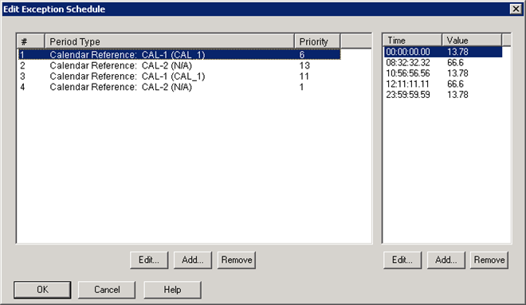
Field/Button | Description |
Edit Button | Allows you to modify the selected event (Calendar Reference or Calendar entry) or schedule time for the event in the Special Event dialog box. |
Add Button | Allows you to add a new event for new time and value entry. |
Remove Button | Allows you to delete the selected event of the selected time-value. |
OK | Confirms your modifications to a schedule and exits the dialog box. |
Edit Landing Call Status
Where You Can Find the Dialog Box
From the system tree, expand your BACnet device. From the Elevator Groups folder, select an object. In the Property Name column, double-click landing-call-control.
What You Can Do with the Dialog Box
The Edit Landing Call Status dialog box allows you to edit the status of the landing call by specifying the floor number and command type.
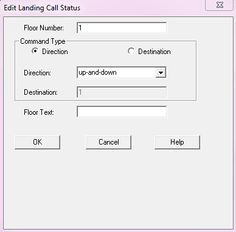
Field/Button | Description |
Floor Number | The requested floor. |
Command Type | The direction and destination of the lift |
Direction | The direction the lift travels. |
Destination | The floor to which the lift is sent. |
Floor Text | (Optional) Note for the current command. |
OK | Confirms your modifications and exits the dialog box. |
Cancel | Cancels your modifications and exits the dialog box. |
Edit Landing Call Status List
Where You Can Find the Dialog Box
From the system tree, expand your BACnet device. From the Elevator Groups folder, select an object. In the Property Name column, double-click landing-calls.
What You Can Do with the Dialog Box
The Edit Landing Call Status List dialog box represents a list of landing calls for a group of lifts.
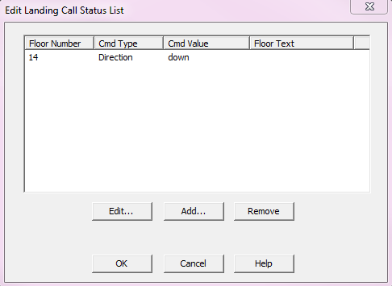
Field/Button | Description |
Edit | Allows you to edit the selected landing call. |
Add | Allows you to add a landing call. |
Remove | Allows you to remove a landing call. |
OK | Confirms your modifications and exits the dialog box. |
Cancel | Cancels your modifications and exits the dialog box. |
Edit Landing Call Status
From the Edit Assigned Landing Call List dialog box, select an object from the list, and click Edit.
What You Can Do with the Dialog Box
The Edit Landing Call Status dialog box allows you to edit the selected landing call.
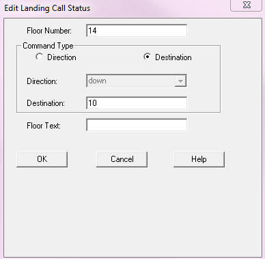
Field/Button | Description |
Floor Number | The requested floor. |
Command Type | Choose either direction or destination. |
Direction | The direction the lift can travel. |
Destination | The floor to which the lift is sent. |
Floor Text | (Optional) Text to describe the floor. |
OK | Confirms your modifications and exits the dialog box. |
Cancel | Cancels your modifications and exits the dialog box. |
Add Landing Call Status
From the Edit Landing Call Status List dialog box, select an object from the list and click Add.
What You Can Do with the Dialog Box
The EditLanding Call Status dialog box allows you to add a landing call.
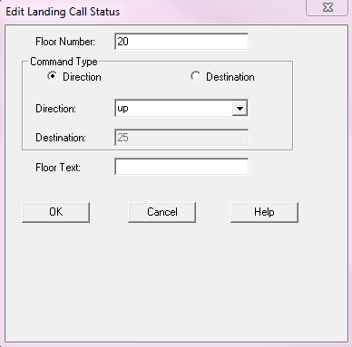
Field/Button | Description |
Floor Number | The requested floor. |
Command Type | Choose either direction or destination. |
Direction | The direction the lift can travel. |
Destination | The floor to which the lift is sent. |
Floor Text | (Optional) Text to describe the floor. |
OK | Confirms your modifications and exits the dialog box. |
Cancel | Cancels your modifications and exits the dialog box. |
Edit Landing Door List
Where You Can Find the Dialog Box
From the system tree, expand your BACnet device. From the Lifts folder, select an object. In the Property Name column, double-click landing-door-status.
What You Can Do with the Dialog Box
The Edit Landing Door List dialog box allows you to see a list of floors where the lift can stop.
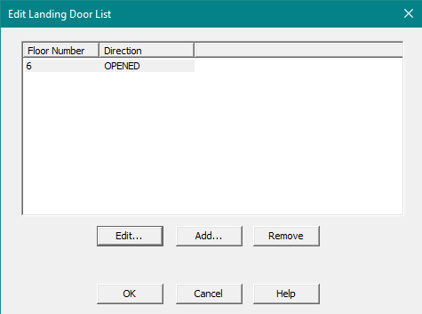
Field/Button | Description |
Edit | Allows you to edit the selected floor the elevator has been called to. |
Add | Allows you to add a floor to the call list. |
Remove | Allows you to remove a floor from the call list. |
OK | Confirms your modifications and exits the dialog box. |
Cancel | Cancels your modifications and exits the dialog box. |
Edit the Selected Floor
Where You Can Find the Dialog Box
From the Edit Landing Door List dialog box, select an object from the list and click Edit.
What You Can Do with the Dialog Box
The Edit Landing Door dialog box allows you to edit what floor to land on and the door status.
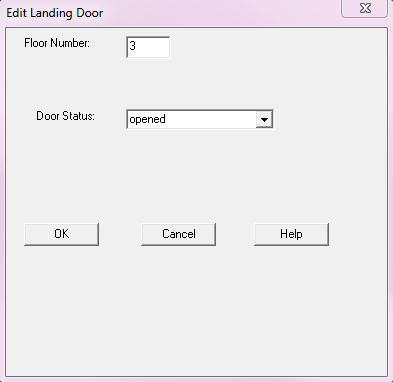
Field/Button | Description |
Floor Number | Displays the floor number of the door. |
Door Status | Displays the status of the door. |
OK | Confirms your modifications and exits the dialog box. |
Cancel | Cancels your modifications and exits the dialog box. |
Add a Floor to the Landing Door List
Where You Can Find the Dialog Box
From the Edit Landing Door List, select an object from the list and click Add.
What You Can Do with the Dialog Box
The Edit Landing Door dialog box allows you to add a floor to the call list.
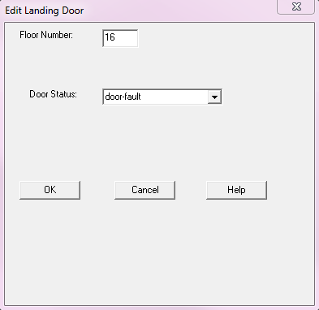
Field/Button | Description |
Floor Number | Displays the floor number of the door. |
Door Status | Displays the status of the door. |
OK | Confirms your modifications and exits the dialog box. |
Cancel | Cancels your modifications and exits the dialog box. |
Edit Network Access Security Policies
Where You Can Find the Dialog Box
From the system tree, expand your BACnet device. From the Network Security Objects folder, select an object. In the Property Name column, double-click network-access-security-policies.
What you can do with the Dialog Box
The Edit Network Access Security Policies dialog box allows you to edit, add, or remove an associated network access security policy.
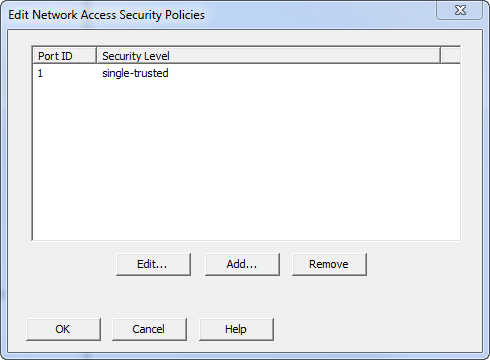
Field/Button | Description |
Port ID | Displays port ID of the associated network. |
Security Level | Displays the type of security level associated with the network policy. |
Edit | Allows you to edit the highlighted network and select a new port ID and security level. |
Add | Allows you to associate a new network access policy. |
Remove | Allows you to remove the highlighted network. |
OK | Saves the information and exits the dialog box. |
Cancel | Cancels the function and exits the dialog box. |
Edit Object ID
Where You Can Find the Dialog Box
From the system tree, expand your BACnet device. Expand the folder of the object you want to modify, and then select the object. Then, double-click the property name you want to modify.
Object Type | Property Name |
Access Credential | object-identifier |
Access Door | object-identifier |
Access Point | object-identifier |
Access Rights | object-identifier |
Access User | object-identifier |
Access Zone | object-identifier |
Accumulator | logging-object |
Analog Inputs | object-identifier |
Analog Outputs | object-identifier |
Analog Values | object-identifier |
Averaging Values | object-identifier |
Binary Inputs | object-identifier |
Binary Outputs | object-identifier |
Binary Values | object-identifier |
Bitstring Values | object-identifier |
Calendars | object-identifier |
Charstring Values | object-identifier |
Channel Objects | object-identifier |
Commands | object-identifier |
Credential Data Input | object-identifier |
Date Pattern Values | object-identifier |
Date Values | object-identifier |
Datetime Pattern Values | object-identifier |
Datetime Values | object-identifier |
Elevator Groups | group-members |
Escalators | object-identifier |
Event Enrollments | object-identifier |
Event Logs | object-identifier |
Files | object-identifier |
Global Groups | object-identifier |
Groups | object-identifier |
Integer Values | object-identifier |
Large Analog Values | object-identifier |
Life Safety Points | object-identifier |
Life Safety Zones | object-identifier |
Lighting Output | object-identifier |
Lifts | object-identifier |
Load Controls | object-identifier |
Loops | object-identifier |
Multistate Inputs | object-identifier |
Multistate Outputs | object-identifier |
Multistate Values | object-identifier |
Network Security Objects | object-identifier |
Notification Class | object-identifier |
Notification Forwarders | object-identifier |
Octetstring Values | object-identifier |
Positive Integer Values | object-identifier |
Programs | object-identifier |
Pulse Converter | object-identifier |
Schedules | object-identifier |
Time Pattern Values | object-identifier |
Time Values | object-identifier |
Trend Log Multiples | object-identifier |
Trend Logs | object-identifier |
What you can do with the Dialog Box
The Edit Object ID dialog box allows you to edit object IDs.
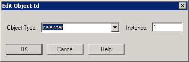
Field/Button | Description |
Object Type | Allows you to enter the object type by clicking the drop-down arrow. |
Instance | Where you enter the instance number for the object. |
OK | Saves the information and exits the dialog box. |
Cancel | Cancels the function. |
Edit Object Property Reference
Where You Can Find the Dialog Box
From the system tree, expand your BACnet device. Expand the folder of the object you want to modify, and then select the object. Then, double-click the property name you want to modify.
Object Type | Property Name |
Access Door | event-algorithm-inhibit-ref |
Access Point | event-algorithm-inhibit-ref |
Access Zone | event-algorithm-inhibit-ref |
Accumulator | event-algorithm-inhibit-ref |
Alert Enrollments | event-algorithm-inhibit-ref |
Analog Inputs | event-algorithm-inhibit-ref |
Analog Outputs | event-algorithm-inhibit-ref |
Analog Values | event-algorithm-inhibit-ref |
Averaging Objects | object-property-reference |
Binary Inputs | event-algorithm-inhibit-ref |
Binary Outputs | event-algorithm-inhibit-ref |
Binary Values | event-algorithm-inhibit-ref |
Bitstring Values | event-algorithm-inhibit-ref |
Charstring Values | event-algorithm-inhibit-ref |
Escalators | event-algorithm-inhibit-ref |
Event Enrollments | event-algorithm-inhibit-ref |
Event Logs | event-algorithm-inhibit-ref |
Global Groups | event-algorithm-inhibit-ref |
Integer Values | event-algorithm-inhibit-ref |
Large Analog Values | event-algorithm-inhibit-ref |
Life Safety Points | event-algorithm-inhibit-ref |
Life Safety Zones | event-algorithm-inhibit-ref |
Load Controls | event-algorithm-inhibit-ref |
Loops | controlled-variable-reference |
Multistate Inputs | event-algorithm-inhibit-ref |
Multistate Outputs | event-algorithm-inhibit-ref |
Multistate Values | event-algorithm-inhibit-ref |
Positive Integer Values | event-algorithm-inhibit-ref |
Pulse Converter | event-algorithm-inhibit-ref |
Trend Log Multiples | event-algorithm-inhibit-ref |
Trend Logs | event-algorithm-inhibit-ref |
What you can do with the Dialog Box
The Edit Object Property Reference dialog box allows you to modify the object-property-reference property.
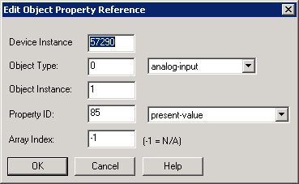
Field/Button | Description |
Device Instance | Allows you to enter the device instance number. |
Object Type | Allows you to select an object type by clicking the drop-down arrow. |
Object Instance | Allows you to enter the object instance number. |
Property ID | Allows you to enter a property ID number by clicking the drop-down arrow. |
Array Index | Allows you to enter an array index number. The default is -1, which means not applicable. |
OK | Saves the information and exits the dialog box. |
Cancel | Cancels the function and exits the dialog box. |
Edit Object Reference List
Where You Can Find the Dialog Box
From the system tree, expand your BACnet device. Expand the folder of the object you want to modify, and then select the object. Then, double-click the property name you want to modify.
Object Type | Property Name |
Access Door | door-members |
Access Point | access-doors |
Access User | credentials |
Access Zone | entry-points |
|
|
What you can do with the Dialog Box
The Edit Object Reference List dialog box allows you to modify device, object type, and instance number.
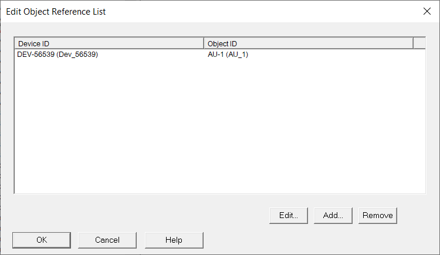
Field/Button | Description |
Device ID | Displays the Device ID information. |
Object ID | Displays the associated Object ID. |
Edit | Displays the Edit Device Object Reference dialog box and allows you to modify device number, object type, and instance number. |
Add | Displays the Edit Device Object Reference dialog box and allows you to add device number, object type, and instance number. |
Remove | Removes the current device object reference. |
Edit Octet String
Where You Can Find the Dialog Box
From the system tree, expand your BACnet device. From the Octetstring Values folder, select an object. In the Property Name column, double-click present-value or relinquish-default.
What you can do with the Dialog Box
The Edit Octet String dialog box allows you to set the priority for the octet string, and enter or modify the octet string.
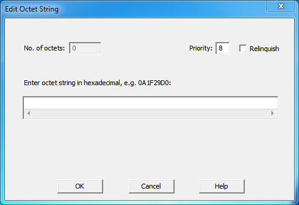
Field/Button | Description |
No. of octets | Not editable. Displays the number of octets in the string. |
Priority | Allows you to enter one of the 16 BACnet priorities. |
Relinquish | Checking this box allows you to give up control at the current priority. |
Enter octet string in hexadecimal | Allows you to enter the octet string in hexadecimal format. |
OK | Confirms your modifications and exits the dialog box. |
Cancel | Cancels the modifications and exits the dialog box. |
Edit Prescale
Where You Can Find the Dialog Box
From the system tree, expand your BACnet device. From the Accumulator folder, select an object. In the Property Name column, double-click prescale.
What you can do with the Dialog Box
The Edit Prescale dialog box allows you to edit Accumulator Prescale values.
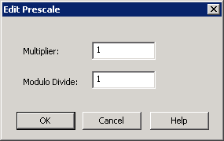
Field/Button | Description |
Multiplier | Allows you to change the multiplier. |
Modulo Divide | Allows you to change the modulo divide. |
OK | Confirms your modifications and exits the dialog box. |
Cancel | Cancels the function and exits the dialog box. |
Edit Process ID Filter
Where You Can Find the Dialog Box
From the system tree, expand your BACnet device. From the Notification Forwarders folder, select an object. In the Property Name column, double-click process-identifier-filter.
What you can do with the Dialog Box
The Edit Process ID Filter dialog box allows you to apply a value for the process ID or mark it as null.
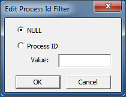
Field/Button | Description |
NULL | Select this button for no Process ID. It means the Process ID is registered as “nothing.” |
Process ID | Select this button to enter a Process ID in the Value field. |
Value | Enter any 32-bit number to serve as the Process ID. |
OK | Confirms your modifications and exits the dialog box. |
Cancel | Cancels the function and exits the dialog box. |
Edit Registered Car Call List
Where You Can Find the Dialog Box
From the system tree, expand your BACnet device. From the Lifts folder, select an object. In the Property Name column, double-click registered-car-call.
What You Can Do with the Dialog Box
The Edit Registered Car Call List dialog box shows a list of currently registered car calls and requests to stop at particular floors using a specific door.
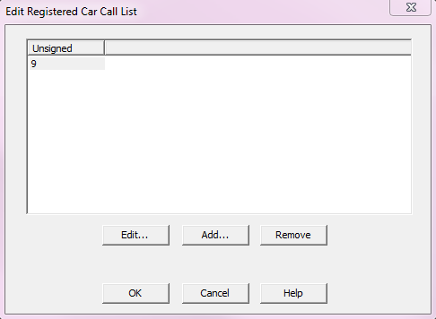
Field/Button | Description |
Edit | Allows you to edit the selected floor in the call list. |
Add | Allows you to add a floor to the call list. |
Remove | Allows you to remove a floor from the call list. |
OK | Confirms your modifications and exits the dialog box. |
Cancel | Cancels your modifications and exits the dialog box. |
Edit a Car Call
Where You Can Find the Dialog Box
From the Edit Registered Car Call List dialog box, select an object from the list and click Edit.
What You Can Do with the Dialog Box
The Edit Unsigned dialog box allows you to edit a selected floor on the call list.
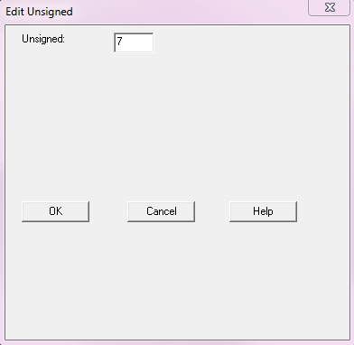
Field/Button | Description |
Unsigned | You can enter a value from 0 to 4292967295. |
OK | Confirms your modifications and exits the dialog box. |
Cancel | Cancels your modifications and exits the dialog box. |
Add a Car Call
Where You Can Find the Dialog Box
From the Edit Registered Car Call List dialog box, select an object from the list and click Add.
What You Can Do with the Dialog Box
The Edit Unsigned dialog box allows you to add a floor to the call list.
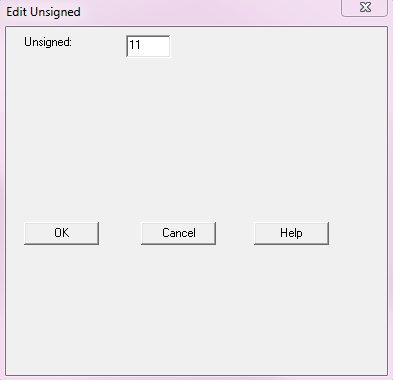
Field/Button | Description |
Unsigned | You can enter a value from 0 to 4292967295. |
OK | Confirms your modifications and exits the dialog box. |
Cancel | Cancels your modifications and exits the dialog box. |
Edit Scale
Where You Can Find the Dialog Box
From the system tree, expand your BACnet device. From the Accumulator folder, select an object. In the Property Name column, double-click scale.
What You Can Do with the Dialog Box
The Edit Scale dialog box allows you to edit Accumulator scale values.
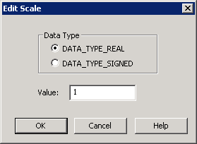
Field/Button | Description |
Data Type | Allows you to select eitherDATA_TYPE_REAL or DATA_TYPE_SIGNED. |
Value | Allows you to enter a new value. |
OK | Confirms your changes and exits the dialog box. |
Cancel | Cancels the function and exits the dialog box. |
Edit Schedule
Where You Can Find the Dialog Box
From the system tree, expand your BACnet device. From the Schedules folder, select an object. In the Property Name column, double-click weekly-schedule, and then double-click one of the schedules.
What You Can Do with the Dialog Box
The Edit Schedule dialog box allows you to edit weekly schedules for the selected schedule object.
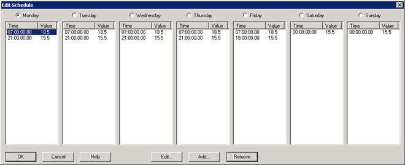
Field/Button | Description |
Edit | Allows you to modify day and time pairs. |
Add | Allows you to add a day and time pair. |
Remove | Allows you to remove a day and time pair. |
OK | Confirms your modifications to a schedule and exits the dialog box. |
Edit Schedule Entry
Where You Can Find the Dialog Box
From the system tree, expand your BACnet device. From the Schedules folder, select an object. In the Property Name column, double-click weekly-schedule, and then double-click one of the schedules. In the Edit Schedule dialog box, select a day of the week, and then click Edit.
What You Can Do with the Dialog Box
The Edit Schedule Entry dialog box allows you to edit only weekly schedule entries that have a simple value type such as a float, integer, unsigned, string, Boolean, etc.
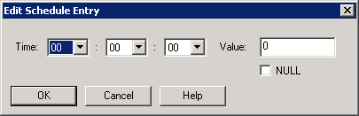
Field/Button | Description |
Time | Allows you to enter the time portion of the schedule entry for the command. |
Value | Allows you to enter the value portion of the schedule entry to command to. Check the Null check box to indicate that the value you enter becomes the default value for the weekly schedule. |
OK | Confirms your modifications to a schedule and exits the dialog box. |
Cancel | Cancels the function and exits the dialog box. |
Edit Shed Level
Where You Can Find the Dialog Box
From the system tree, expand your BACnet device. From the Load Controls folder, select an object. In the Property Name column, double-click requested-shed-level.
What You Can Do with the Dialog Box
The Edit Shed Level dialog box allows you to specify a data type and a value for the shed level.
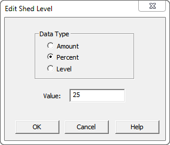
Field/Button | Description |
Data Type | Allows you to select Amount, Percent, or Level. |
Value | Allows you to enter a value for the data type. |
OK | Confirms your modifications and exits the dialog box. |
Cancel | Cancels the modifications and exits the dialog box. |
Edit Special Event
Where You Can Find the Dialog Box
From the system tree, expand your BACnet device. From the Schedule folder, select an object. In the Property Name column, double-click exception-schedule. Then, double-click one of the calendar references. Then, double-click the time entry you want to edit. In the Edit Exception Schedule dialog box, select the calendar reference you want to edit, and then click the Edit button.
What You Can Do with the Dialog Box
The Edit Special Event dialog box allows you to set a priority for a special event, select a date or period for a special event, and display the instance number of a calendar reference.
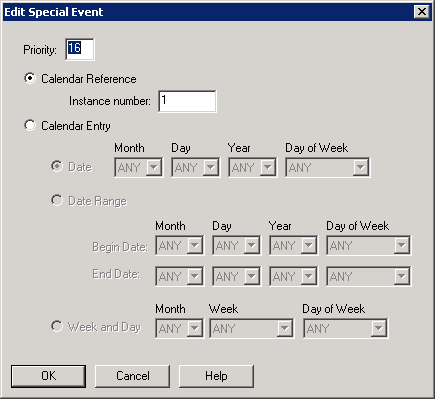
Field/Button | Description |
Priority | Allows you to enter the priority level of the special event. |
Calendar Reference & Instance Number | Displays the instance number of the calendar reference. |
Calendar Entry | Allows you to select a date, date range, or weekly and day period for a particular special event. |
OK | Confirms your modifications and exits the dialog box. |
Edit Supported Formats List
Where You Can Find the Dialog Box
From the system tree, expand your BACnet device. From the Credential Data Input folder, select an object. In the Property Name column, double-click supported-formats. Then, double-click one of the entries.
What You Can Do with the Dialog Box
The Edit Supported Formats List dialog box allows you to add or modify factor (format) type, vendor ID, and vendor format number.
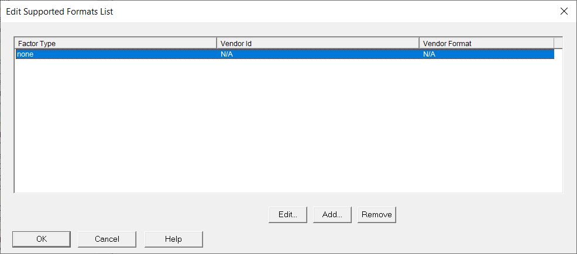
Field/Button | Description |
Edit | Opens the Edit Supported Format dialog box where format type, vendor ID, and vendor format can be modified. |
Add | Opens the Edit Supported Format dialog box where format type, vendor ID, and vendor format can be added. |
Remove | Removes the selected entry. |
Enter Date/Time
Where You Can Find the Dialog Box
From the system tree, expand your BACnet device. Expand the folder of the object you want to modify, and then select the object. Then, double-click the property name you want to modify.
Object Type | Property Name |
Accumulator | value-change-time |
Averaging Objects | maximum-value-timestamp |
Binary Inputs | change-of-state-time |
Binary Outputs | change-of-state-time |
Binary Values | change-of-state-time |
Pulse Converter | update-time |
What You Can Do with the Dialog Box
The Enter Date/Time dialog box allows you to edit dates and times for start-time and stop-time properties in a trend log object.
The default setting, ANY, is a wildcard that the device interprets to mean match any available data.
Field/Button | Description |
Month | Accept the default setting of ANY, or click the drop-down arrow to select the month. The numbers 1 through 12 represent the number of months in a year, with 1 representing January. |
Day | Accept the default setting of ANY, orclick the drop-down arrow to select day of the month. The numbers 1 through 31 represent the number of days in a month. |
Year | Accept the default setting of ANY, or click the drop-down arrow to select a year, 1990 through 2036. |
Day of Week | Accept the default setting of ANY, or click the drop-down arrow to select a day of the week. |
Hour | Accept the default setting of ANY, or click the drop-down arrow to select an hour of the day. The numbers 0 through 23 represent the number of hours in a day. |
Minute | Accept the default setting of ANY, or click the drop-down arrow to select the minute. The numbers 0 through 59 represent the number of minutes in an hour. |
Second | Accept the default setting of ANY, or click the drop-down arrow to select the second. The numbers 0 through 59 represent the number of seconds in a minute. |
OK | Confirms your modifications and exits the dialog box. |
Cancel | Cancels the function and exits the dialog box. |
Event Enrollment Summary Filter
Where You Can Find the Dialog Box
From the View menu, select the Enrollment Summary Filter.
What You Can Do with the Dialog Box
The Event Enrollment Summary Filter dialog box allows you to edit the filters used by the Event Enrollment Summary view. You can select any combination of filters.
Field/Button | Description |
Alarm Acknowledge Filter | Click the drop-down arrow to select All, Acked, or not Acked. |
Filter by Recipient | Check this box to activate the Recipient button and the Process ID field. |
Recipient | Click this button to launch the Edit Recipient dialog box, which allows you to select the Device Instance number, the address, and the broadcast type. |
Process ID | Enter the Process ID of the application in the BACnet device you are sending alarms to. |
Filter by Event State | Check this box to select the event state by clicking the drop-down arrow and selecting All, OffNormal, Fault, Normal, or Active. |
Filter by Event Type | Check this box to select the event type by clicking the drop-down arrow and selecting Change of Bitstring, Change of State, Change of Value, Command Failure, Floating Limit, Out of Range, Complex, Buffer Ready, Change of Life Safety, Extended, Buffer Ready 2, or Unsigned Range. |
Filter by Priority | Check this box to select the priority. Enter the priority range from 0 to 255. |
Filter by Notification Class | Check this box to select the notification class. Enter the notification class number. |
OK | Saves the information and exits the dialog box. |
Cancel | Cancels the function and exits the dialog box. |
Import Points
Where You Can Find the Dialog Box
From the system tree, select your BACnet device. From the Services menu, select Import Points.
What You Can Do with the Dialog Box
The Import Points dialog box allows you to selectively import objects (points) from any BACnet devices into the Desigo CC database.
When you discover devices using BACnet Auto Disovery from the Desigo CC System Manager, all objects contained in any discovered device are added to the Desigo CC database by default. You can use the Import Points dialog box in the BACnet Object Browser to selectively import only a portion of the objects found in a BACnet device.
You might want to selectively import points for any of the following reasons:
- Because users are not interested in all of the points in a device, especially if the device manufacturer includes a fixed number of points in a device that might not all be used.
- To reduce the number of objects in the Desigo CC database to meet system sizing requirements.
- To reduce the number of Desigo CC licenses required.
Field/Button | Description |
Object Name | Displays a list of the third-party device’s objects available for importing. |
Type | Shows the object type. |
Instance # | Displays the object instance numbers. |
Status | Displays the status of the object after you click the Import button. |
Import | Imports the selected objects into the System Manager database. |
Cancel | Cancels any selections and exits the dialog box. |
Life Safety Service
Where You Can Find the Dialog Box
From the system tree, expand your BACnet device. From one of the Life Safetyfolders, select an object. From the Services menu, select LifeSafety Operation.
What You Can Do with the Dialog Box
The Life Safety Service dialog box allows you to perform the life safety operation when you have a Life Safety Point or Zone selected.
Field/Button | Description |
Process ID | Enter the Process ID of the application in the device you are performing the life safety operation on. |
Operation | Click the drop-down arrow to select from one of the following: None, Silence, Silence Audible, Silence Visual, Reset, Reset Alarm, and Reset Fault. |
Source | Enter an optional text message here. |
Operation on All Life Safety Objects | Check this check box to perform the life safety operation on all life safety objects in the device. If the life safety operation is not the expected operation for a given object, the object will be skipped. |
OK | Saves the information and exits the dialog box. |
Cancel | Cancels the function and exits the dialog box. |
Lighting Command
Where You Can Find the Dialog Box
From the system tree, expand your BACnet device. From the Lighting Outputs folder, select an object. In the Property Name column, double-click lighting-command.
What You Can Do with the Dialog Box
The Lighting Command dialog box allows you to provide additional lighting functionality with special lighting-specific functions, such as ramping, stepping, and fading.
Field/Button | Description |
Light Operation | Defines the lighting operation desired. |
Target Level | Lighting level transitions to after being commanded. The normal range is 0.0% to 100.0%. |
Step | Size of the increments during transition. The range of allowable values is 0.1% to 100.0%. |
Ramp Rate | Represents the rate of change in percent per second. The ramp-rate value is 0. to 100.0. |
Fade Time | Represents the time in milliseconds over which the fade takes place. The range of allowable fade-time values is 100 ms to 86400000 ms (1 day). |
Priority | Allows you to enter one of the 16 BACnet priorities. |
OK | Confirms the modifications and exits the dialog box. |
Cancel | Cancels the modifications and exits the dialog box. |
Re-Initialize Device
Where You Can Find the Dialog Box
From the system tree, select your BACnet device. From the Services menu, select Re-Initialize Device.
What You Can Do with the Dialog Box
The Re-Initialize dialog box allows you to send a warmstart or coldstart command to re-initialize the selected device.
Field/Button | Description |
Warmstart the Device | Warmstarts the selected device. |
Coldstart the Device | Coldstarts the selected device. |
Device Password | Enter a device password if the device was configured to require a password for the Re-initialize device service. |
OK | Saves the information and exits the dialog box. |
Cancel | Cancels the function and exits the dialog box. |
Send Text Message
Where You Can Find the Dialog Box
From the system tree, select your BACnet device. From the Services menu, select Send Text Message.
What You Can Do with the Dialog Box
The Send Text Message dialog box allows you to send a text message to a device or broadcast a text message to multiple devices.
Field/Button | Description |
Unconfirmed | Click this button to send an unconfirmed text message to a device or devices. Unconfirmed messages can also be broadcast to the local subnet, a remote subnet, or globally. |
Confirmed | Click this button to send a message with a confirmation that it has been received by the device or devices it was intended for. |
Broadcast | Click this check box to broadcast the text message to the local subnet, a remote subnet, or globally. |
Destination Device ID | Leave the default ID. |
Destination Network | Leave the default network. |
IP Address | Leave this field blank. |
6 Byte Address | Leave this check box unchecked. |
Normal | Click this button for messages that are not urgent. |
Urgent | Click this button for urgent messages. |
String | Click this button to send a string message. |
Numeric | Click this button to send a numeric message. |
Message | Enter the message you want to send to the device. |
OK | Saves the information and exits the dialog box. |
Cancel | Cancels the function and exits the dialog box. |
View Accumulator Record
Where You Can Find the Dialog Box
From the system tree, expand your BACnet device. From the Accumulator folder, select an object. In the Property Name list, double-click logging-record.
What You Can Do with the Dialog Box
The View Accumulator Record dialog box allows you to view an Accumulator Logging record.
Field/Button | Description |
Date Time | Displays the date and time of the record. |
Present Value | Displays the current value. |
Accumulated Value | Displays the accumulated value. |
Accumulated Status | Displays the accumulated value. |
OK | Saves the information and exits the dialog box. |
Cancel | Cancels the function and exits the dialog box. |
View Options
Where You Can Find the Dialog Box
From the View menu, select Options.
What You Can Do with the Dialog Box
The View Options dialog box allows you to select the properties you want to display by default for an object.
Field/Button | Description |
All Properties | Select this check box to view all the associated properties of an object. |
Only Required Properties | Select this check box to view only the required properties associated with an object. |
Only Optional Properties | Select this check box to view only the optional properties of an object. |
Required and Optional Properties | Select this check box to view the required and optional properties associated with an object. |
Do No Use Read Property Multiple | Check this box to prevent multiple properties from being sent to a device in a single request. Instead, a series of individual property requests will be sent to a device. |
Add Devices Automatically When I-Am Is Received | Check this box to find device and status information on existing BACnet networks. Adds devices automatically when an I-Am is received and tells the BACnet Object Browser to add a BACnet device into the system tree when a BACnet I-Am message is received from a device. |
OK | Saves the information and exits the dialog box. |
Cancel | Cancels the function and exits the dialog box. |
Who-Has
Where You Can Find the Dialog Box
From the Services menu, select Send Who-Has.
What You Can Do with the Dialog Box
The Who-Has dialog box allows you to broadcast Who-Has a to find the device with the object you are looking for.
Field/Button | Description |
Send Who-Has to Device Range | Enter a range of numbers on a network to find the device that has the object you are looking for. |
Object Name | Select this button and enter an object name you want to search for on the network. The object can contain wildcards such as AI*, *A*, or *A. |
Object ID | Select this button and enter an Object ID and an Instance Number for the object you want to search for on the network. |
Send Who Has | Select this button once you have entered either the Object Name or the Object ID and Instance Number. |
Listening for I-Haves | Lists the System Driver, Device Instance, Object ID, and Object Name. |
OK | Saves the information and exits the dialog box. |
Cancel | Cancels the function and exits the dialog box. |
Clear | Clears the devices from the Listening for I-Haves device list. |
Who-Is
Where You Can Find the Dialog Box
From the system tree, select the top-level node, BACnet Networks, and then from the Services menu, select Send Who-Is.
What You Can Do with the Dialog Box
The Who-Is dialog box allows you to send a Who-Is request to devices on the BACnet network. Devices connected to the network within the specified device range display in the list.
Field/Button | Description |
Send Who-Is To Device Range | Enter a range of numbers on a network to find a device. |
Send Who-Is | Click this button once you have entered a device range. |
Listening for I-Ams | Lists the System Driver, Instance Number, Device Name, Network Number, and MAC Address. |
Show response in the range only | Lists devices that are defined in the range. |
Total Count | Indicates the total number of devices found. |
OK | Once you select a device or devices from the Listening for I-Ams list, click OK to browse the device. |
Cancel | Cancels the function and exits the dialog box. |
Clear | Clears the device from the Listening for I-Ams device list. |
Write Property
Where You Can Find the Dialog Box
From the system tree, select your BACnet device. The Write Property dialog box is available from many object types and property names.
- Object Types: Accumulator, Alert Enrollments, Analog Inputs, and others.
- Property Names: Apdu-timeout, application-software-version, backup-failure-timeout, and others.
What You Can Do with the Dialog Box
The Write Property dialog box allows you to view or edit the current object value of a selected property. If the property has an assigned priority array, the dialog displays a field for the priority. The BACnet Object Browser can edit many data types including Bit Strings, Booleans, Character Strings, Date Ranges, Enumeration, Reals, Signed, Unsigned, Weekly Schedules, Exception Schedules, Recipient Lists, Object Reference Lists, Action Lists, and Calendars.
Field/Button | Description |
Property | Displays the current property type of the selected object. |
Value | Displays the current value of the selected object. |
Data Type | Displays the data type of the selected object. |
New Value | Allows you to enter or select a different value for the property. |
Priority | Allows you to enter a different priority level for the selected object, if desired. Check the Relinquish command at this priority check box if you want to relinquish a previously issued command at this priority. Click Send Now to command the new value. This updates the right pane in the BACnet Object Browser window. |
Write Property Mulitple Active | Indicates that you have edited a device property and selected the Send Later button. |
Delete WPM | Cancels the edits you have selected to send later. |
Send Now | Allows you to implement the edited property immediately. |
Send Later | Allows you to temporarily save changes you made to a property so that you can make changes to other device properties before implementing the entire batch by clicking the Send Now button. |
Cancel | Cancels the function and exits the dialog box. |